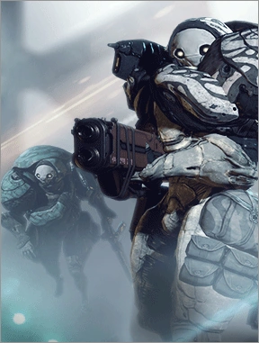
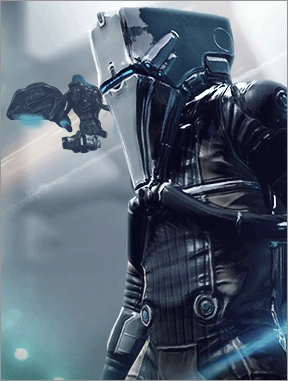

What is Warframe
Intro au Jeu
Warframe vous plonge dans un univers futuriste en tant que Tenno, guerrier utilisant des Warframes aux pouvoirs incroyables. Explorez, combattez et créez votre légende dans ce jeu dynamique et évolutif.
Les ennemies
Dans l'univers de Warframe, les Grineers, les Corpus et les Infestés se livrent à une lutte incessante pour le pouvoir. Les Tenno, guerriers éveillés, naviguent entre ces factions, choisissant avec soin leurs alliances dans ce monde en constante évolution.
Le lore
Dans un univers déchu après la chute des Orokin, les Tenno se réveillent pour protéger la galaxie en utilisant les Warframes. Dirigés par Lotus, ils affrontent les forces du mal et découvrent les mystères de l'ancien empire, forgeant ainsi une légende dans Warframe.
Qui sont les ennemies dans Warframe ?

